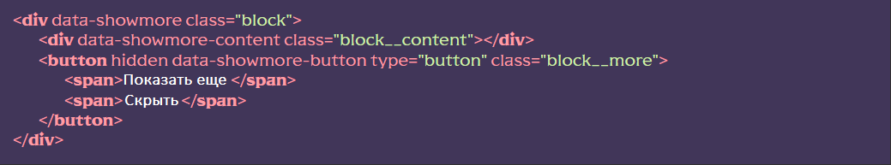

Подключение функционала
[HTML] В нужном месте вызвать сниппет showmore (классы заменить на нужные). Либо вручную создать структуру где для оболочки добавлен атрибут data-showmore, для дочернего элемента data-showmore-content и для кнопки data-showmore-button. Кнопку изначально нужно скрыть добавив атрибут hidden и добавить два тега <span> с текстом показа и скрытия контента:

[JS] В файле js/app.js раскомментировать строку
flsFunctions.showMore();
[SCSS] Раскомментировать строку
@import “base/showmore”; в файле src/scss/base.scss —
это подключит базовые стили, отредактировать под свои нужды
Использование функционала
В элемент с атрибутом data-showmore-content добавляем текст и прочий контент, либо, если это список (UL/OL) элементы списка (LI).
В зависимости от того, какой контент используется (текст или элементы списка) указываем значение для атрибута data-showmore :- size - ограничение по высоте блока (по умолчанию)
- items – ограничение количества выводимых элементов списка
В зависимости от того, какой тип выбран, указываем значение для атрибута data-showmore-content :
- Высота блока в пикселях (число без рх, по умолчанию 150)
- Количество выводимых элементов списка (число, по умолчанию 3)
Если контента будет меньше чем указанное ограничение, кнопка “Показати ще” не будет показана.. В противном случае, контент ограничится по высоте либо по количеству элементов и при клике на кнопку будет показан полностью, также, к элементу с атрибутом data-showmore добавится класс _showmore-active (первый спан в кнопке будет скрыт а второй показан). Повторный клик вернет ограничение.
Есть возможность управлять скоростью разворачивания контента, для этого следует указать значение атрибуту data-showmore-button в миллисекундах (по умолчанию 500):
Включение функционала на определенной ширине экрана
Для того чтобы использовать функционал на определенной ширине экрана, к объекту с атрибутом data-showmore добавляем атрибут data-showmore-media где, через запятую, указываем нужную ширину, а также
- max (по умолчанию) – функционал включится на ширине меньшей чем указанная
- min – функционал включится на ширине большей чем указанная
Расположение и дополнительные данные
Функционал находится в js/files/functions.js. Название функции showMore()